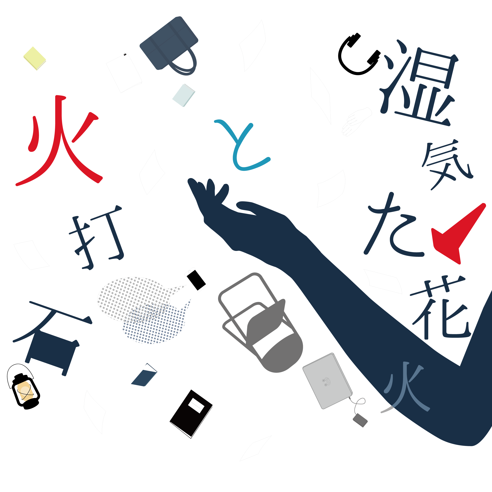
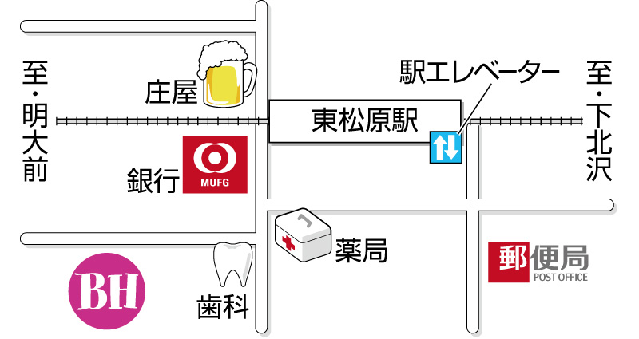

建築途中で放棄された未完成の廃ビルがある。
身の回りに物があると極端に集中できない在宅プログラマ、
田上はここに勝手に侵入して仕事場代わりにしていた。
ある日そこに田上を含めた六人が集まる。
偶然集まった彼らに接点はないが、
不思議とそれ以降も廃ビルに集まるようになった。
しかし、彼らは決して「よくできた人間」ではなかった。
時にぶつかり、火花を散らし、
その先に一瞬でも美しく光る何かを探して……
劇団アオイミナトマチ×劇団EnTRoPy
建築途中で放棄された未完成の廃ビルがある。
身の回りに物があると極端に集中できない在宅プログラマ、
田上はここに勝手に侵入して仕事場代わりにしていた。
ある日そこに田上を含めた六人が集まる。
偶然集まった彼らに接点はないが、
不思議とそれ以降も廃ビルに集まるようになった。
しかし、彼らは決して「よくできた人間」ではなかった。
時にぶつかり、火花を散らし、
その先に一瞬でも美しく光る何かを探して……
劇団アオイミナトマチ×劇団EnTRoPy
舞台「湿気た花火と火打石」
脚本 / 頃末龍
演出 / 熊谷ひろたか
河合萌・木村美帆・頃末龍・芝三奈・田村重人・仲村咲乃
舞台監督 / 瀧岡美咲
舞台監督補佐/ 木村美帆・山本啓太
演出助手 / 河井萌
舞台美術 / 加藤真央・山崎真裕・川原ゆい
音響 / 境大軌・武田帆七海・山本啓太
照明 / 熊谷ひろたか・村上航・坂田颯馬
衣装メイク / 岩城智子
宣伝美術 / kayano
WEB制作 / 木村佐恵
制作 / 三木ほまれ・齋藤大樹・相京優輝
武田帆七海・橘直雪・仲村咲乃
製作 / 劇団アオイミナトマチ・劇団EnTRoPy
チケットのご予約はこちら
11月26日(日) 13:30-/18:30-
11月27日(月) 14:00-
＊開場は開演の30分前を予定しております。
＊上演時間は約90分を予定しております。
[前売] 学生：1000円 / 一般：1200円
[当日] 学生：1200円 / 一般：1400円
東松原ブローダーハウス (東松原駅より徒歩5分ほど)
住所：東京都世田谷区松原５丁目２７−１０
メール：aoiminatomachi2017@gmail.com
公式ブログ：ブログリレー開催中！
Facebook：@shiketa.hanabi
Twitter：@shiketa_hanabi